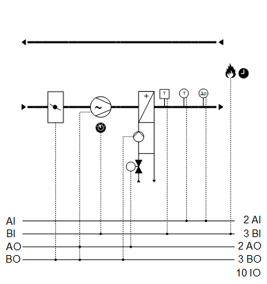
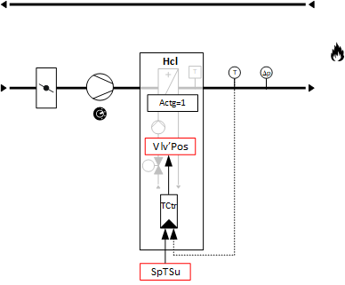

[HelloWorld21] Hello world, first example
Plant example HelloWorld21 has a variable speed fan, hot water heating coil and a shutoff damper. The example represents basic HVAC functions and displays the most important concepts of the plant application.
Functions
- Supply air temperature control
- Pressure control
Plant diagram

Components
- Supply air fan, speed-controlled
- Outside air shutoff damper
- Hot water heating coil
Components and functions
Components and functions of the plant example:
Component | Function | BACnet object |
|---|---|---|
| Fire detection contact Switches the plant off. | [BI] Fire detection contact |
| Manual operating mode selection Switches the plant to: Auto | Off | On | [MCnfVal] Manual operating mode selection |
| Maintenance switch Switches the plant to: Normal | Maintenance | [BI] Maintenance switch |
| Scheduler program Switches the plant to: Off | On | [MSchedule] Scheduler |
| Present operating mode Reports the present operating mode: Off | On | [MCalcVal] Present operating mode |
| Supply air temperature setpoint | [ACnfVal] Setpoint for supply air temperature |
| Supply air differential pressure sensor Measures the differential pressure between duct and environment. | [AI] Supply air pressure (Located in |
| Supply air temperature sensor Measures the supply air temperature. | [AI] Supply air temperature |
| Heating coil |
|
Reports hot water demand to heat distribution. | > [BCalcVal] Hot water demand | |
Frost protection Prevents the hot water heating coil from freezing. If the frost protection monitor triggers:
| > [BI] Frost protection monitor | |
Pump |
| |
Pump command Switches on/off the pump as needed. | > [BO] Command | |
Valve |
| |
Temperature controller Controls the supply air temperature. | > [Controller] Temperature controller | |
Valve position Controls the valve position: 0…100 [%] | > [AO] Position | |
Supply air fan |
| |
Pressure controller Controls the supply air pressure. | > [Controller] Pressure controller | |
Determines the setpoint for supply air pressure. | > [ACnfVal] Setpoint supply air pressure | |
Command Switches on/off the fan as needed. | > [BI] Command | |
Speed Controls the fan speed between 0 and 100 [%]. | > [AO] Speed | |
Maintenance switch Switches off the fan and the plant. The fan outputs are blocked locally at a high priority (Prio 2). | > [BI] Maintenance switch | |
| Outside air damper |
|
Command Opens and closes the outside air damper. | > [BO] Command |


 Supply air fan)
Supply air fan)


Functions and diagrams
Temperature control

Supply air temperature control – Heating coil valve position

Vlv'Pos | Valve position | Hcl'Vlv'Pos | Heating coil valve position |
SpTSu | Setpoint for supply air temperature | TSu | Supply air temperature |
BACnet objects
Name | Description | Object type | Default value |
|---|---|---|---|
Hcl'Vlv'TCtr | Temperature controller for heating coil Controls the supply air temperature. | Controller | N/A |
The temperature controller acts as a PI controller (PID with derivative action time Tv=0) and compares the temperature setpoint [SpTSu] against the supply air temperature [TSu] and calculates the valve position [Hcl'Vlv'Pos] on the output. The following controller variables are preset: | |||
Heating coil valve control - Heating coil pump command

Hcl'Pu'Cmd | Heating coil pump command | Hcl'Vlv'Pos | Heating coil valve position |
Supply air pressure control - Fan speed

FanSu'Spd | Supply air fan speed | SpPSu | Setpoint supply air pressure |
PSu | Supply air pressure |
BACnet objects
Name | Description | Object type | Default value |
|---|---|---|---|
FanSu'PCtr | Pressure controller for supply air fan Controls the supply air pressure. | Controller | N/A |
The pressure controller acts as a PI controller (PID with derivative action time Tv=0) and compares the setpoint for supply air pressure [SpPSu] against the supply air pressure [PSu] and calculates the fan speed [Spd] on the output. The following controller variables are preset: | |||
Plant operating modes and control sequence
Plant operating modes:
- Off (1)
- On (2)
The operating modes are reported on [MCalcVal] object 'Present operating mode'.
The components for control are connected to function block CMDSEQ_B and are also acquired by this function block. See table below.
There is a normal mode and exception mode.
Normal operation
Sources for normal mode:
- [MCnfVal] Manual operating mode selection
- [MSchedule] Scheduler
In normal mode, the components are controlled at priority 15 per the operating mode, sequence, and function in function block CMDSEQ_B. The set timeouts and/or delays are considered.
Exception mode
Sources for exception mode:
- Fire detection contact
- Faults in the components frost protection monitor and maintenance switch
In exception mode, all outputs are switched off directly at priority 5 and the present operating mode is set to 'Off'. This is reported to function block CMDSEQ_B on input [RpdOff] and the components are switched off immediately as of the function block at priority 15.
The set timeouts and/or delays are not considered.
Special case frost protection:
In this case, outputs [AO] valve position and [BO] pump command are switched on by the heating coil at priority 4.
Special case maintenance switch:
In this case, outputs [AO] speed and [BO] command are switched off by the fans at priority 2.
Components, sequence, and function in CMDSEQ_B
Plant operating mode | Component | ||
|---|---|---|---|
| Hcl | DmpOa | FanSu |
Off | Off | Off | Off |
On | On | On | On |
| |||
Sequences |
| ||
Start sequence | 1 | 2 | 3 |
Start function | Delay | Delay | AND (Group with next aggregate) |
Start delay | 10s | 15s | - |
| |||
Stop sequence | 2 | 2 | 1 |
Stop function | AND (Group with next aggregate) | AND (Group with next aggregate) | Delay |
Stop delay | - | - | 10s |
Start sequence
- The heating coil switches on. Switched after 10 seconds.
- The shutoff damper opens. Switched after 15 seconds.
- The supply air fan switches on.
Stop sequence
- The supply air fan switches off. It waits for 10 seconds (function delay).
- The shutoff damper closes and the cooling coil switches off (function AND).
I/O data points
Name | Description | Type | Signal/connection | State text | Engineering unit |
|---|---|---|---|---|---|
FireDetCont | Fire detection contact Alarm function: Extended (Notification class 7) Reference value: Tripped Time deviation: 0 [s] | BI | Contact NC | Normal | Tripped | N/A |
FanSu'PSu | Supply air fan supply air pressure | AI | 0...10 [V] | N/A | 0...500 [Pa] |
TSu | Supply air temperature | AI | LG-Ni1000 | N/A | 0...50 [°C] |
Hcl'Vlv'Pos | Heating coil valve position | AO | 0...10 [V] | N/A | 0...100 [%] |
Hcl'Pu'Cmd | Heating coil pump command | BO | Contact NO | Off | On | N/A |
Hcl'FrPrtMon | Heating coil frost protection monitor Alarm function: Extended (Notification class 7) Reference value: Tripped Time deviation: 0 [s] | BI | Contact NC | Normal | Tripped | N/A |
FanSu'Spd | Supply air fan speed | AO | 0...10 [V] | N/A | 0...100 [%] |
FanSu'Cmd | Supply air fan command | BO | Contact NO | Off | On | N/A |
FanSu'MntnSwi | Supply air fan maintenance switch Alarm function: Basic (Notification class 8) Reference value: Maintenance Time deviation: 0 [s] | BI | Contact NO | Normal | Maintenance | N/A |
DmpOa'Cmd | Outside air damper command | BO | Contact NO | Close | Open | N/A |